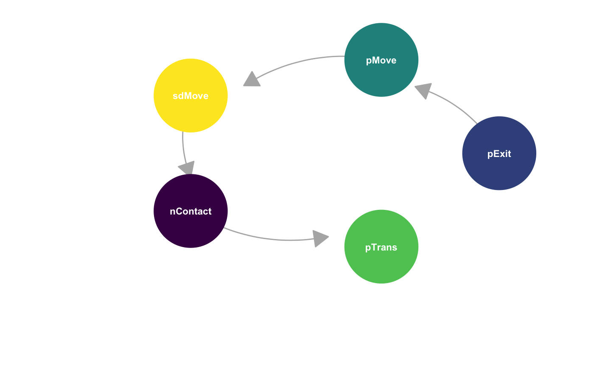

nosoi aims to provide a modular framework to conduct epidemiological simulations under a wide range of scenarios, varying from relatively simple to highly complex and parameteric. This flexibility allows nosoi to take into account the effect of numerous covariates, taken individualy or in interaction, on the epidemic process, without having to use advanced mathematics to formalize the model into differential equations. As it core, nosoi generates a transmission chain (a link between hosts), the foundation of every epidemic process, allowing the reconstruction in great details of the history of the epidemic.
nosoi is an agent-based model, which means it is centered on individuals, here called “hosts”, that enter the simulation when they get infected. It’s also stochastic, and thus relies heavily on probabilities, mainly 4 core probabilities, and its time is discretized.
nosoi
nosoi assumes that the maximum number of hosts infected during your simulation is orders of magnitude smaller than the total exposed population. This means that, currently, it does not take into account building heard immunity using the simulated epidemic results (although a proxy can be used; discussed in the several tutorials).
As it core, nosoi can be summarised by 3 probabilities at a specific time point:
pExit). For hosts, that means, for example, dying, being cured, leaving the study area, etc.pMove, only relevant when your simulation has some kind of structure, either in a discrete or continuous space). For hosts, that could, for example, travelling, changing status (becoming rich, or getting a treatment), etc.moveDist) (only relevant when a stucture exist in a continuous space).timeContact). How many potentially infectious contacts does an infected host have?pTrans). When a contact occures between two hosts, one of which being infected, the probability that the infection gets transmitted to the uninfected one.Each of these probabilities and numbers are computed during the simulation. In a very simple scenario, each one is a constant. In more complex models supported by nosoi they could depend on hosts parameters (e.g. genetics), dynamic parameters (since when the host is infected), environemental parameters (where the host is), or the moment of the simulation (e.g. seasons, mitigation campaign,…), taken individually into account or together.
Time is discretized in nosoi; each time step follows the same flow for each host:

Once all steps have been gone through, the simulation moves to the next time step.